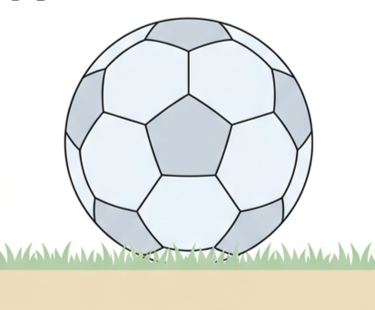
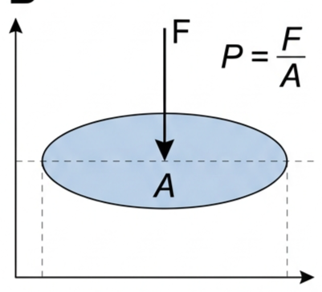
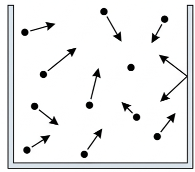
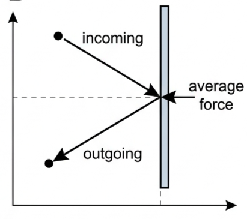
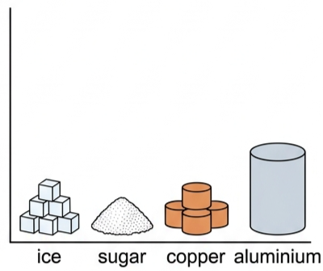
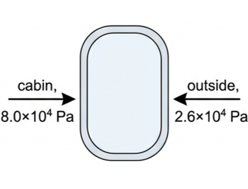
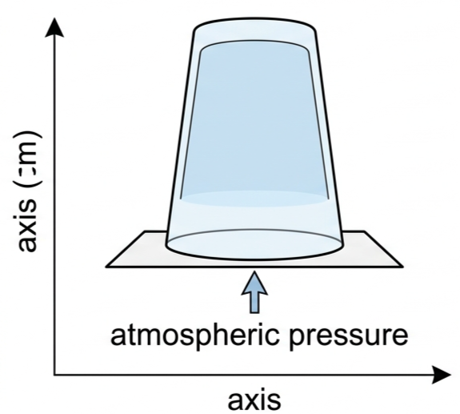
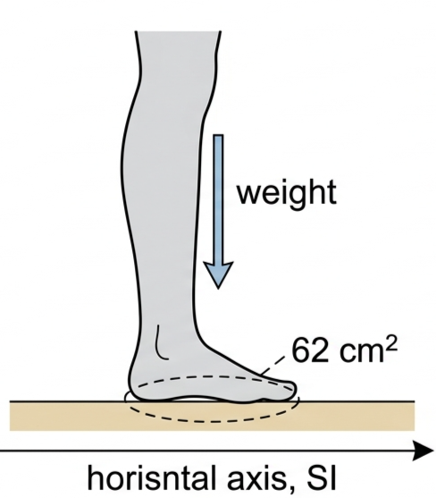
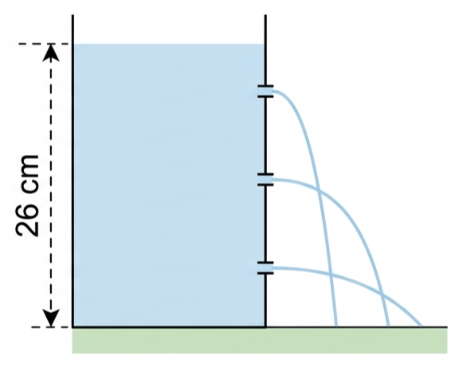

Every gas law in this topic is built from two ideas: pressure as force spread over area, and amount of substance as a count of particles small enough to fit on a calculator screen.
⚽ Hook – why a football feels hard
A football is nothing but a thin skin of rubber and a lot of empty-feeling gas, yet a properly inflated one feels almost solid. A typical ball holds about 0.25 mol of air at a pressure of around \(9\times10^{4}\ \text{Pa}\) — that's trillions of air molecules, each hammering the inside of the skin and rebounding, millions of times a second. It is the combined effect of these tiny random collisions, not any single big push, that gives the ball its pressure and its shape.

Fig 1 — A football contains about 0.25 mol of air at a pressure of about \(9\times10^{4}\) Pa.
💡 Diagnostic question (think — then read on) — pumping more air into the ball doesn't change its size much, so why does it make the ball feel harder? Squeezing more molecules into (almost) the same volume increases the number of collisions with the inside of the skin every second, without changing the average force of each individual collision — so the pressure (force per unit area) goes up.
📐 Pressure: force spread over area
The effect of a force often depends on the area it acts over — the same weight pressing down through a stiletto heel and a snowshoe produces very different results underfoot. Pressure is defined as the perpendicular (normal) force acting per unit area:
Pressure$$P = \frac{F}{A}$$
📖 Syllabus content — Pressure, \(P = \dfrac{F}{A}\), where \(F\) is the force exerted perpendicular to the surface.
The SI unit of pressure is the pascal, Pa: \(1\ \text{Pa} = 1\ \text{N m}^{-2}\).

Fig 2 — Pressure is the perpendicular force per unit area on which it acts.
This idea applies just as much to liquids as to gases: pressure in a liquid increases with depth, because a deeper layer has more liquid weight pushing down on it. Note, though, that pressure due to a fluid — liquid or gas — acts equally in all directions, not just downwards, unlike the weight of a solid object.
💨 Gas pressure at the molecular level
All gases contain particles — usually molecules — moving randomly in every direction, typically at high speed, as sketched in Fig 3. Because there are essentially no forces between the molecules except during collisions, the physical behaviour of gases is far easier to model than that of solids or liquids.

Fig 3 — Gases contain particles moving randomly at high speed, colliding with each other and with the container walls.
Each collision of a molecule with a container wall produces a tiny outward force, perpendicular to the surface. Because the motion is random, individual collisions vary in size — but the sheer number of molecules striking even a small area every second means the average force per unit area stays constant. That constant average force per unit area is the gas pressure. Collisions between molecules themselves simply redirect their motion and have no other overall effect.

Fig 4 — Every molecular collision with a wall creates a tiny outward force perpendicular to the wall; billions of these per second add up to a steady pressure.
Atmospheric pressure — the pressure due to the motion of the gas molecules in the air around us — can also be thought of as the weight of the air above each square metre. It acts equally in all directions and is about \(1.0\times10^{5}\ \text{Pa}\) at sea level, decreasing with height above the ground.
🔢 Amount of a substance
The amount of a substance (symbol \(n\)) measures how many atomic-scale particles it contains. What counts as a "particle" depends on the substance: helium, He, exists as separate atoms, but most other gases are molecular — \(\text{H}_2\), \(\text{O}_2\), \(\text{CO}_2\), \(\text{CH}_4\), \(\text{N}_2\).
Even a small amount of gas contains an enormous number of particles (\(\approx10^{19}\) or more), so a more manageable unit is needed: the mole (mol). One mole is the amount of substance that contains exactly \(6.02214076\times10^{23}\) particles — the Avogadro constant, \(N_{\text{A}}\) (usually taken as \(6.02\times10^{23}\)).
Amount of substance$$n = \frac{N}{N_{\text{A}}}$$
📖 Syllabus content — the amount of substance, \(n\), as given by \(n = N/N_{\text{A}}\), where \(N\) is the number of molecules and \(N_{\text{A}}\) is the Avogadro constant.
The molar mass of a substance is the mass that contains exactly one mole of it, usually quoted in \(\text{g mol}^{-1}\):
Molar mass and amount of substance$$n = \frac{\text{total mass}}{\text{molar mass}}$$
Substance
Molar mass / g mol⁻¹
Hydrogen molecules
2.02
Helium atoms
4.00
Carbon-12 atoms
12.00
Carbon atoms
12.01
Water molecules
18.01
Aluminium atoms
26.98
Nitrogen molecules
28.02
Oxygen molecules
32.00
Carbon dioxide molecules
44.01
Gold atoms
197.00

Fig 5 — One mole of different substances has a very different mass and volume, depending on molar mass and density.
🔝 Top tip! Molar mass depends on the number of protons and neutrons in each atom or molecule — more massive particles give a mole of greater mass. Check: an oxygen molecule has two atoms, each with 16 particles, each of mass \(1.67\times10^{-27}\ \text{kg}\). One mole (\(6.02\times10^{23}\) molecules) has mass \(6.02\times10^{23}\times2\times16\times1.67\times10^{-27} = 3.2\times10^{-2}\ \text{kg}\) (32 g) — matching the table above.
📊 Reading pressure diagrams
Diagram
What's shown
Key relationship
What to read
Force–area diagram
A flat area with a single perpendicular force
\(P = F/A\)
Same force, smaller area → larger pressure
Pressure-with-depth apparatus
Container with holes at different heights, water jetting out
Pressure increases with depth
The lowest jet travels furthest — it experiences the greatest pressure
Molecular collision diagram
A single molecule rebounding off a wall
Average force per collision → pressure
Random individual forces, but a steady average over billions of collisions per second
Cabin/altitude pressure diagram
Two regions at different pressures separated by a surface
\(\Delta P\) produces a resultant force \(F = \Delta P \times A\)
Compare the pressure each side, then multiply the difference by the shared area

Fig 6 — A pressure difference across an aircraft window produces a resultant outward force, \(F = \Delta P \times A\).

Fig 7 — Atmospheric pressure pushing up can exceed the pressure due to a small depth of water, keeping the water in.
✓ Examiner tip: whichever diagram appears in a question, start by writing down which surfaces the pressures act on and which direction each pressure pushes — most marks are lost from a missing or wrong direction, not from the arithmetic.
✍️ Worked example 1 – pressure under a foot
A girl of mass 51 kg stands on one leg. If the effective area of her foot in contact with the ground is 62 cm², calculate the pressure she is exerting on the ground.
1
Identify: her weight acts perpendicular to the ground over the contact area of one foot, so use \(P = F/A\).
Answer: \(P = 8.1\times10^{4}\ \text{Pa}\). The same weight spread over two feet, or over snowshoes, would give a much smaller pressure.

Fig 8 — The same weight produces a much larger pressure when it acts over the small area of one foot.
✍️ Worked example 2 – pressure at the bottom of a water container
Water comes out of three holes at different heights on the side of a tall container — the jet from the lowest hole travels furthest, showing that liquid pressure increases with depth. If the depth of water is 26 cm and the area of the bottom of the container is 84 cm², calculate: (i) the volume of water, (ii) the mass of water (density \(=1000\ \text{kg m}^{-3}\)), (iii) the weight of the water, and hence the pressure of the water at the bottom (ignoring the pressure due to the air above the water).
1
Identify: the weight of the water column acts down on the base, so find that weight, then apply \(P = F/A\).
Equation: volume \(=\) depth \(\times\) area \(= 0.26\times(84\times10^{-4}) = 2.2\times10^{-3}\ \text{m}^3\) mass \(=\) volume \(\times\) density \(= 2.184\times10^{-3}\times1000 = 2.2\ \text{kg}\) weight \(= mg = 2.184\times9.8 = 21\ \text{N}\)
4
Answer:$$P = \frac{F}{A} = \frac{21.403}{84\times10^{-4}} = 2.5\times10^{3}\ \text{Pa}$$The total pressure at the bottom would also need the atmospheric pressure of the air above the water, \(1.0\times10^{5}\ \text{Pa}\), added on.

Fig 9 — The lowest jet travels furthest, because the pressure of the water increases with depth.
✍️ Worked example 3 – moles and molecules in a gas
(a) How many moles are there in 0.50 kg of molecular oxygen gas? (b) How many molecules are there in that same mass of gas?
1
Identify: use \(n = \text{total mass}/\text{molar mass}\), then \(N = nN_{\text{A}}\).
2
Data: total mass \(= 0.50\ \text{kg}\); molar mass of \(\text{O}_2 = 32\ \text{g mol}^{-1} = 32\times10^{-3}\ \text{kg mol}^{-1}\).
A car's weight is supported entirely through the small contact patches where its tyres touch the road, so \(P = F/A\) governs both the pressure on the road and the pressure of the air that must be maintained inside each tyre. Adding more air stiffens the tyre wall, which reduces how much it flattens against the road — shrinking the contact area for the same total weight.
✓ Examiner tip: "more air pressure means a smaller contact area" is a standard IB-style application of \(P=F/A\) with \(F\) fixed — always identify which quantity in the formula is being held constant before deciding what happens to the other two.
🚀 HL extension – a constant fixed by definition
Until 2018, the Avogadro constant was defined relative to a standard substance: \(N_{\text{A}}\) was the number of atoms in exactly 12 g of the isotope carbon-12. Since 2018, the mole and \(N_{\text{A}}\) are defined only by the fixed number \(6.02214076\times10^{23}\), with no reference to carbon at all.
Challenge: does this change mean a mole of oxygen gas now contains a different number of molecules than it did before 2018? Answer: no — the fixed number was chosen to match the old carbon-12-based value as closely as our best measurements allowed, so every molar quantity calculated before or after 2018 is unchanged in practice.
⚠️ Trap corner – common mistakes
Misconception
Correct view
Gas or liquid pressure only pushes downwards
Fluid pressure acts equally in all directions, not just down — unlike the weight of a solid object
More air in a tyre means less pressure on the road
For the same total weight, a smaller contact area (caused by higher tyre pressure) means a greater pressure on the road
"Amount of substance" means the same as mass
Amount of substance (\(n\), in mol) counts particles; mass and molar mass convert between the two: \(n = \text{mass}/\text{molar mass}\)
The Avogadro constant is a rough, approximate figure
Since 2018 it is an exact defined number, \(6.02214076\times10^{23}\ \text{mol}^{-1}\), not a measured approximation
⚠️ Most common slip: forgetting to convert cm² to m² (or g to kg) before substituting into \(P=F/A\) or \(n=\text{mass}/\text{molar mass}\) — this single error typically throws the final answer out by a factor of \(10^3\) or \(10^4\).
P = F/A1 Pa = 1 N m⁻²fluid pressure acts in all directionsgas pressure = average of billions of collisionsn = N/N_AN_A = 6.02×10²³ mol⁻¹n = mass/molar massmolar mass in g mol⁻¹
Practice check — multiple choice
1. A drawing pin needs only a small push from a thumb to go through card, but the same push from a flat thumb alone will not. Why can a small force produce a large pressure at the pin's point?
A Pressure always increases with force alone
B The same force spread over a very small area gives a large pressure
C Pins only work in solids, not fluids
D The card offers no resistance to any force
2. Which statement about gas pressure at the molecular level is correct?
A It only acts downwards, like the weight of a solid
B It is produced by the average force of countless molecular collisions with a surface
C Each individual collision exerts exactly the same force
D It disappears if molecules stop colliding with each other
3. A sample of gas contains \(3.01\times10^{23}\) molecules. How many moles is this? (\(N_{\text{A}} = 6.02\times10^{23}\ \text{mol}^{-1}\))
A 0.500 mol
B 1.00 mol
C 2.00 mol
D \(6.02\times10^{23}\) mol
4. Using the molar mass table, which substance has the greatest mass for one mole?
A Hydrogen molecules
B Water molecules
C Carbon dioxide molecules
D Gold atoms
5. Since 2018, the Avogadro constant, \(N_{\text{A}}\), has been defined as
A exactly the number of atoms in 12 g of carbon-12
B an exact fixed number, \(6.02214076\times10^{23}\), independent of any substance
C a value that varies slightly depending on which gas is measured
D the number of molecules in one litre of gas at sea level
Practice check — fill in the blanks
Complete the statements:
Pressure is defined as the perpendicular force acting per unit , and its SI unit is the . Unlike the weight of a solid, gas and liquid pressure act in directions. Gas pressure results from the average force of countless molecular with the container walls. The amount of substance is given the symbol , measured in , and found by dividing the number of particles by the . The mass containing exactly one mole of a substance is its .
Exam‑style questions
Exam question · Calculate
Q1. A car of weight 1500 kg has four tyres, each of which has an area of 180 cm² in contact with the road. (a) Calculate the pressure under each tyre (in Pa). (b) State the pressure of the air inside the tyre. (c) If the driver puts more air into the tyre, what will happen to (i) the area in contact with the ground, (ii) the pressure on the road? [5 marks]
✓ Total weight \(= 1500\times9.8 = 14\,700\ \text{N}\); weight per tyre \(= 14\,700/4 = 3675\ \text{N}\). ✓ Area \(= 180\times10^{-4} = 0.0180\ \text{m}^2\), so \(P = 3675/0.0180 = 2.0\times10^{5}\ \text{Pa}\). ✓ (b) The air pressure inside the tyre is approximately equal to this contact pressure, about \(2\times10^{5}\ \text{Pa}\). ✓ (c)(i) The contact area decreases, since a stiffer, more inflated tyre deforms less. ✓ (c)(ii) For the same total weight over a smaller area, the pressure on the road increases.
Exam question · Calculate
Q2. The air pressure at a height of 10 km above sea level is \(2.6\times10^{4}\ \text{Pa}\). Inside a passenger aircraft at this height, the air pressure is maintained at 80% of the pressure at sea level (\(1.0\times10^{5}\ \text{Pa}\)). (a) What is the difference in pressure between inside and outside the aircraft? (b) What resultant force due to the air is acting on a window which is 27 × 47 cm²? [4 marks]
Fig 6 (again) — the aircraft window from Fig 6, used here to find the resultant force from a pressure difference.
✓ (a) Cabin pressure \(= 0.80\times(1.0\times10^{5}) = 8.0\times10^{4}\ \text{Pa}\); \(\Delta P = 8.0\times10^{4}-2.6\times10^{4} = 5.4\times10^{4}\ \text{Pa}\). ✓ (b) Window area \(= 0.27\times0.47 = 0.127\ \text{m}^2\). ✓ \(F = \Delta P\times A = 5.4\times10^{4}\times0.127 = 6.9\times10^{3}\ \text{N}\), directed outward (cabin pressure is greater than the outside pressure).
Exam question · Explain / Calculate
Q3. (a) Using the concept of pressure, explain how it is possible for the water to remain in the upside-down glass shown in Fig 7 (assume the glass is full of water). (b) If the glass is only half full of water to begin with, how will the demonstration change? Assuming a water volume of 250 cm³ (the diagram's own dimensions were not given in the source), calculate (i) the mass of water in the glass, (ii) the number of moles of water in the glass, (iii) the number of water molecules in the glass. [6 marks]
✓ (a) Atmospheric pressure (about \(1.0\times10^{5}\ \text{Pa}\)) pushes upward on the underside of the water, and this greatly exceeds the pressure due to the water's own small depth, so the resultant force holds the water in. ✓ (b) With half the water, the demonstration works the same way: atmospheric pressure still far exceeds the water's own pressure, so the water is still held in — only the air space above it is larger. ✓ (i) mass \(=\) volume \(\times\) density \(= 250\times10^{-6}\times1000 = 0.25\ \text{kg}\). ✓ (ii) \(n = \text{mass}/\text{molar mass} = 0.25/(18.01\times10^{-3}) = 13.9\ \text{mol}\). ✓ (iii) \(N = nN_{\text{A}} = 13.9\times(6.02\times10^{23}) = 8.4\times10^{24}\) molecules.
Exam question · Calculate / Compare
Q4. Consider the football shown in Fig 1. (a) If the molar mass of the air in the ball is approximately 29 g mol⁻¹, what is the mass of the air in the ball? (b) Compare the pressure of the air inside the ball to the pressure of the air outside the ball. [4 marks]
✓ (a) mass \(= n\times M = 0.25\times29 = 7.25\ \text{g} \approx 7.3\ \text{g}\). ✓ (b) The pressure inside the ball, about \(9\times10^{4}\ \text{Pa}\) as stated, is compared with atmospheric pressure outside, \(1.0\times10^{5}\ \text{Pa}\). ✓ An inflated ball's internal pressure must in practice exceed the outside pressure for it to hold its shape, so these figures should be read as approximate rather than exact.